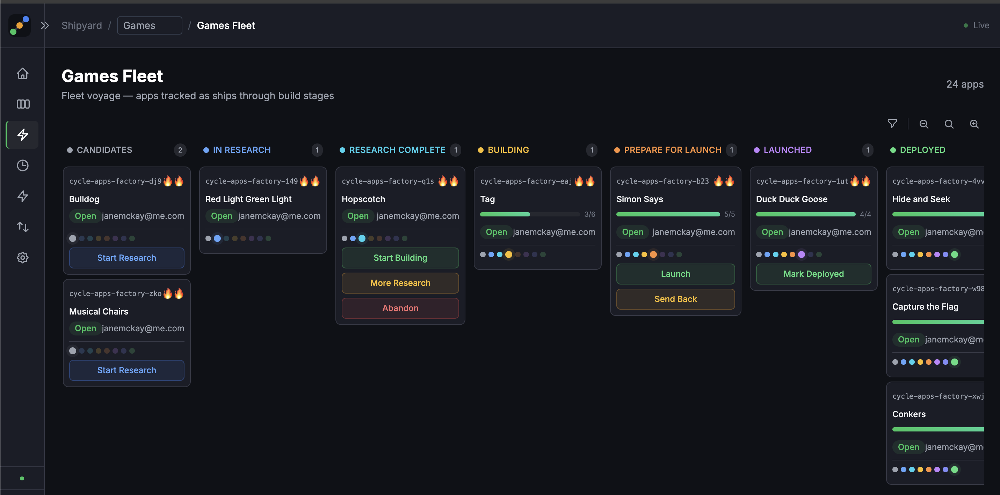

Welcome Aboard: A Guide to the Fleet
I built an autonomous software shipyard — a system where AI agents build entire products while I make the strategic decisions. The shipyard has its own language, borrowed from naval architecture, because every term maps directly to a real stage, role, or artefact in the system.
If you understand the language, you understand the shipyard. This is the guide.
The whole system runs on beads-fleet, a dashboard I built on top of Beads — Steve Yegge's git-backed issue tracker. The fleet board is the control surface: every ship in the fleet is a card, every column is a stage in the voyage, and the buttons on each card trigger autonomous AI agents or advance the ship to its next stage.

The Harbourmaster
The harbourmaster oversees the entire fleet. I decide which ideas deserve investigation, whether the research brief justifies building, whether the built product passes sea trials, and when a ship is ready to launch.
In a traditional team, this role would be split across a product manager, a tech lead, a QA lead, and a project manager. In the shipyard, it is one person — because the AI handles the execution and the pipeline handles the coordination. The harbourmaster's job is judgment: product judgment, quality judgment, and architectural judgment.
The harbourmaster does not write code. The harbourmaster decides what gets built, evaluates whether it was built correctly, and defines the standing orders that govern how everything is built. Every ship in the fleet reflects the harbourmaster's taste, standards, and product vision.
The Voyage
Every product takes a voyage — a journey from initial idea to deployed product. The voyage has nine (customisable) stages, each represented as a column on the fleet board. Ships move from left to right as they progress.
| Stage | What Happens | Who Acts |
|---|---|---|
| Candidates | Ideas wait. A title, a paragraph, a seed. | Harbourmaster creates the epic |
| In Research | The scout investigates — market research, competitors, positioning. | AI agent (autonomous) |
| Research Complete | Recon brief ready. First human decision gate. | Harbourmaster reviews and decides |
| Building | The build crew implements the product from the recon brief. | AI agent (autonomous) |
| Prepare for Launch | The harbourmaster tests the built product and the launch crew prepare the release materials. Second human decision gate. | Harbourmaster evaluates quality |
| Launched | AI agent + harbourmaster ships | |
| Refit | Post-launch analysis extracts patterns back into shared stores. | AI agent (autonomous) |
| Deployed | Live and complete. The voyage is finished. | -- |
| Abandoned | Investigated and deliberately abandoned. A record of good judgment. | Harbourmaster decides |
The human decision points sandwich the AI execution stages. Research runs autonomously, then the harbourmaster evaluates. building runs autonomously, then the harbourmaster evaluates. The pattern is: AI executes, human validates. All the way through.
The Glossary
| Naval Term | What It Means |
|---|---|
| Shipyard | The entire autonomous build system |
| Harbourmaster | The human who oversees the fleet — product vision, quality judgment, architectural taste |
| Voyage | The journey from idea to deployed product |
| Fleet board | The visual kanban showing all ships and their current stage |
| Ship | A product moving through the voyage |
| Fleet card | A ship's card on the fleet board, showing progress, priority, cost, and actions |
| Candidates | Where ideas wait before investigation |
| In Research | Market research and feasibility investigation |
| Research Complete | Recon complete, awaiting the harbourmaster's decision |
| Building | Active development by the build crew |
| Prepare for Launch | Testing and quality evaluation by the harbourmaster |
| Launched | Deployment actions |
| Refit | Post-launch pattern extraction back into shared stores |
| Deployed | Live and complete |
| Abandoned | Idea investigated and deliberately abandoned |
| Scout | The research agent — conducts market and feature research |
| Build crew | The development agent — implements the product |
| Launch crew | The release agent — prepares store metadata and release materials |
| Standing orders | The standards documents that govern how every ship is built |
| Flagship | The reference implementation — the first ship, built by hand, that all others follow |
| Stores | Shared component libraries used across all ships |
| Recon brief | The market research report produced by the scout |
| Dry dock | Where a ship returns for repairs after failing sea trials |
| Wake | The phase history dots on a fleet card — the trail showing where a ship has been |
| Crew aboard | An agent is currently running on this ship |
| Recall crew | Stop the running agent |
One harbourmaster. An entire fleet. Days, not months.